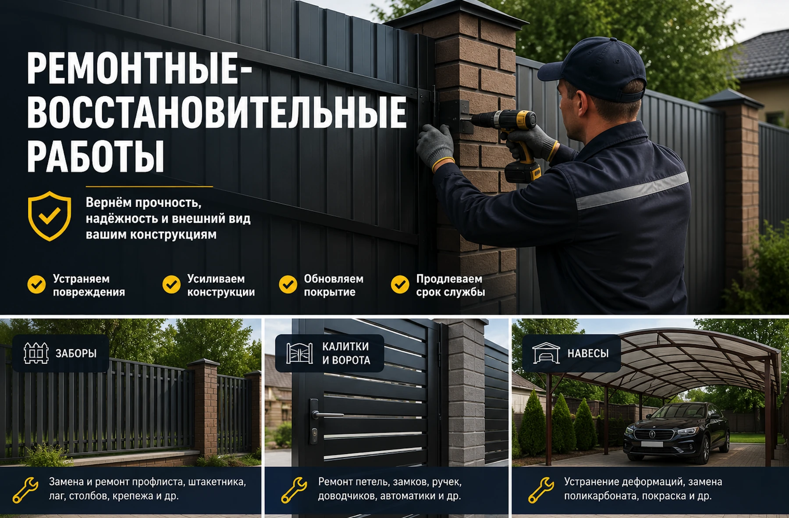
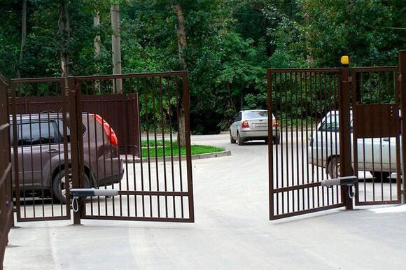

01
Секции и заполнение
Замена профлиста, штакетника, ламелей, сетки, поврежденных планок и крепежа.
Восстанавливаем заборы, ворота, калитки и металлические конструкции после перекоса, коррозии, повреждений и износа фурнитуры.

Подбираем решение по состоянию объекта: от точечной замены элементов до восстановления всей линии ограждения.
Замена профлиста, штакетника, ламелей, сетки, поврежденных планок и крепежа.

Регулировка створок, петель, замков, роликов, улавливателей и автоматики.

Усиление столбов, сварка, восстановление геометрии, зачистка и окраска металла.
По фото подскажем, что можно восстановить, а что выгоднее заменить, и договоримся о выезде.
Можно отправить фото участка, размеры и коротко описать задачу.